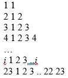

Вивести на екран
A B C D E
B C D E F
C D E F G
D E F G H
E F G H I
Використовуючи цикли вивести на екран 20 символів «о».
Інвестор вклав S тис. грн на 20 років під 20% річних. Визначити за допомогою циклів суму, яку він одержить (без оподаткування).
Інвестор вклав тис. грн на 20 років під 20% річних, податок складає 5% від суми прибутку. Визначити за допомогою циклів суму, яку він одержить.
Інвестор вклав тис. грн на 20 років під 20% річних, а потім на 17 років під 27% річних. Визначити за допомогою циклів суму, яку він одержить.
Вивести на екран послідовність символів
а о а о а о а о а о …
Всього символів 82.
Написати програму виведення на екран кожного символу латинського алфавіту та поруч з кожним з них символу, що передує йому та що слідує за ним.
Вивести на екран
Спортсмен-лижник в перший день тренування пробіг 10 км. Кожного наступного дня він збільшував довжину пробігу на P% від довжини пробігу попереднього дня (P – дійсне число, 0 < P < 50). Визначити, після якого дня тренування сумарний пробіг лижника за всі дні перевищить 200 км. Вивести знайдену кількість днів K (ціле) і сумарний пробіг S (дійсне число).
Дано ціле число N (N > 0). Використовуючи операції ділення націло та остачі від ділення, визначити чи є в записі числа N непарні цифри. Якщо так, то вивести True, якщо ні – False.
З клавіатури вводяться числа та послідовно сумуються. Знайти кількість введених користувачем чисел, коли їх сума перевищить 100.
Дано ціле число N (N > 0). Використовуючи операції ділення націло та остачі від ділення, знайти кількість та суму його цифр.